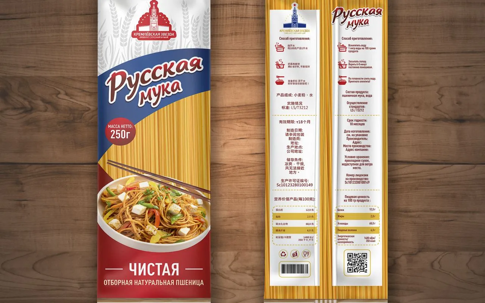
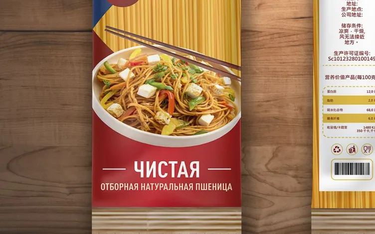
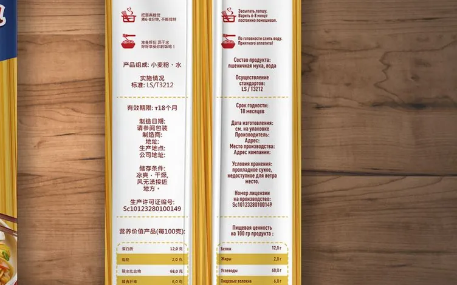

Упаковка
Лапша «Кремлёвская звезда»: упаковка для экспорта в Китай
Упаковка пшеничной лапши для продажи в Китае. Лицевая сторона говорит покупателю, что продукт из России, оборотная на китайском и русском объясняет, как его готовить и что внутри.
- Экспорт в Китай
- Пищевая упаковка
- Флоупак

Задача
Клиент и задача
Российский производитель выпускает пшеничную лапшу под маркой «Кремлёвская звезда» и продаёт её в Китае. Нужна была упаковка, которая на китайской полке сразу показывает происхождение продукта и при этом понятна покупателю, который не читает по-русски.
Формат: мягкая упаковка флоупак на 250 г, длинная и узкая, как у спагетти. На такой пачке мало места, поэтому на лицо попадает только главное, а всё обязательное уходит на оборот.



Лицо
Лицевая сторона
Главная мысль лицевой стороны: это продукт из России, из хорошей пшеницы.
- Логотип марки: башня Кремля со звездой и подпись «Кремлёвская звезда, продукт с русской душой».
- Название линейки «Русская мука» и строка «Чистая, отборная натуральная пшеница».
- Колосья пшеницы как знак сырья.
- Фото готового блюда: лапша в тарелке с палочками. Покупатель видит знакомую подачу, а не чужую кухню.
- Красный, белый и синий в палитре, чтобы российское происхождение читалось без слов.
Масса нетто вынесена в красный круг на лицевой стороне, чтобы покупатель не искал её по пачке. Надписи на лице оставлены по-русски: для китайского покупателя кириллица сама по себе знак импортного товара.
Оборот
Оборотная сторона на двух языках
Оборот разделён на две колонки: слева текст на китайском, справа тот же текст на русском. Блоки в колонках стоят на одной высоте, поэтому проверить перевод и найти нужную строку легко:
- способ приготовления с пиктограммами по шагам;
- состав продукта и стандарт, по которому он выпущен;
- срок годности 18 месяцев и условия хранения;
- поля для даты изготовления, производителя, адреса и номера лицензии на производство;
- таблица пищевой ценности;
- штрихкод, QR-код и знаки утилизации.
Пиктограммы работают без перевода: даже если текст набран мелко, по картинкам понятно, как варить и как подавать. Логотип марки повторяется над колонкой, чтобы оборот узнавался отдельно от лица.
Макет
Как собрана пачка
Фон всей пачки, включая оборот, занимает фактура сухой лапши. Даже если пачку положили обратной стороной вверх, понятно, что внутри. Лицо разделено на три зоны: светлый верх с логотипом и колосьями, синяя полоса с названием и красный низ с блюдом и главным обещанием про пшеницу. Цвета идут сверху вниз в порядке российского флага.
В показанном макете поля адреса, даты и производителя на обороте пустые: в них встают данные производителя.
Итог
Итог
Готовая упаковка для экспорта: лицо с российской символикой и оборот на двух языках с одинаковой структурой. Цифр по продажам и отзыва по этому проекту у меня нет, поэтому кейс показывает только саму работу.
Как я готовлю упаковку и материалы для выхода на зарубежный рынок: дизайн для экспорта и дизайн упаковки. Похожие проекты: упаковка мёда для Китая Высота и 3D Российского павильона на SIAL China 2023. Другие работы в разделе упаковка в портфолио.
Готовите продукт к экспорту?
Пришлите продукт и страну, предложу, что вынести на лицо упаковки.